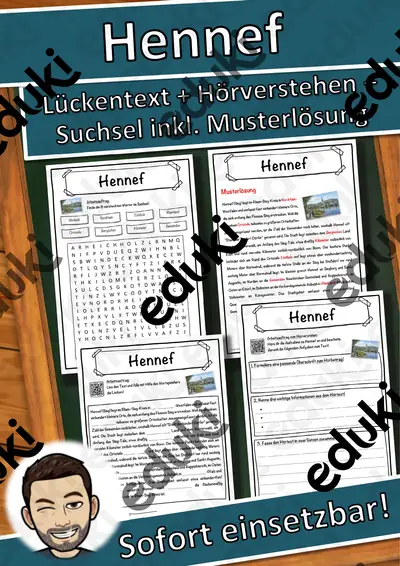

Bauernhof und Nutztiere: Arbeitsblätter für Klasse 1–4 (Sachunterricht)
Der Bauernhof zeigt, woher Milch, Eier und Fleisch kommen. Er gehört zu den klassischen Themen der ersten beiden Schuljahre und bereitet das Verständnis von Landwirtschaft und Tierhaltung vor.
Die Begriffsliste dieser Einheit: Nutztiere, Stall und Weide, Milch und Eier, Ernte, Landwirt und Tierjunge.
Die Lehrpläne der Länder sehen das Thema im Fach Sachunterricht vor, in der Regel in der Grundschule. Als Ziel gilt: die Kinder ordnen Tiere und ihre Produkte zu und beschreiben einen Arbeitstag auf dem Hof.
Für den Einstieg in Bauernhof und Nutztiere bieten sich Aufgaben zu Nutztiere an, zum Üben solche zu Stall und Weide und Milch und Eier, zur Wiederholung vor einer Lernkontrolle ein Blick auf Tierjunge. Die Lösungen liegen bei, sodass im Unterricht niemand nachschlagen muss. Leistungsstarke und schwächere Lesende erhalten über die Lesespurgeschichten Texte in drei Stufen.
Die Auswahl zum Thema umfasst derzeit 17 Titel, zum Beispiel Wortgitter-Suchsel: Bauernhof, Ich habe, wer hat? Bauernhof und Memory: Bauernhof. Dazu zählen 1 Lesespurgeschichte und 5 Lückentexte mit Hörverstehen für Klasse 1–5. Stallgeräusche vom Band als Rätselstart wecken sofort Aufmerksamkeit und lassen sich gut mit Tierlauten verbinden.
Das gehört zum Thema
Passende Arbeitsblätter und Materialpakete

Das Schaf – Lesespurgeschichte mit Rätselaufgaben (Klasse 5)

Hennef Lückentext mit Wortspeicher Hörverstehen und Suchsel

Hühner Lückentext mit Wortspeicher Hörverstehen und Suchsel

Esel Lückentext mit Wortspeicher Hörverstehen und Suchsel

Landwirtschaft Lückentext mit Wortspeicher Hörverstehen und Suchsel

Bauernhof Lückentext mit Wortspeicher Hörverstehen und Suchsel

Wortgitter-Suchsel: Bauernhof – Wortgitter – Klasse 1–4

Ich habe, wer hat? Bauernhof – Lese-Schleifen – Klasse 1–4

Memory: Bauernhof – Bild-Wort-Spiele – Klasse 1–4

Domino: Bauernhof – Bild-Wort-Spiele – Klasse 1–4

Wort-Bild-Karten: Bauernhof – Wort-Bild-Karten – Klasse 1–4

Himmel und Hölle: Bauernhof – Himmel und Hölle – Klasse 1–4

Sprechanlässe: Bauernhof – Sprechanlässe – Klasse 1–4

Klammerkarten: Bauernhof – Klammerkarten – Klasse 1–4

Lesen, Malen und Kleben: Bauernhof – Lesen und Malen – Klasse 1–4

Wortspiele: Sag es nicht! Bauernhof – Klasse 2–4

Ziffern-Schreibwerkstatt Ziffern 0 bis 5 auf dem Bauernhof – Spuren, Schreiben, Zählen in 3 Stufen (Vorschule, Klasse 1, DaZ)
Häufige Fragen
Für welche Klassenstufe passen die Arbeitsblätter zu Bauernhof und Nutztiere?
Passend sind Klasse 1–5. Von den 17 Titeln wenden sich die meisten an Klasse 2, einige lassen sich differenzierend auch in benachbarten Stufen nutzen.
Welche Inhalte decken die Materialien zu Bauernhof und Nutztiere ab?
Inhaltlich reicht die Auswahl von Nutztiere über Stall und Weide und Milch und Eier bis zu Landwirt; Details stehen bei den einzelnen Materialien.
Wie setze ich Bauernhof und Nutztiere im Unterricht ein?
Stallgeräusche vom Band als Rätselstart wecken sofort Aufmerksamkeit und lassen sich gut mit Tierlauten verbinden. So entsteht aus den Blättern eine kleine Einheit, die sich auf zwei bis drei Stunden verteilen lässt.
Mehr Material nach Fach und Klasse
Verwandte Lehrplanthemen
- Landwirtschaft und Ernte (Erdkunde, Klasse 4–9)
- Berufe und Berufswahl (Sachunterricht, Klasse 1–10)
- Dinosaurier und Urzeit (Sachunterricht, Klasse 1–5)
- Geld und Konsum (Sachunterricht, Klasse 2–10)
- Gesunde Ernährung (Sachunterricht, Klasse 1–8)